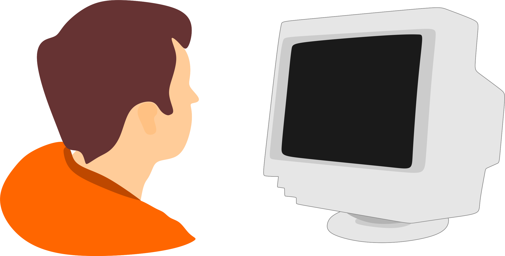

CARLOS VIEIRA
Desenvolvedor Front-End
Olá, prazer em conhecê-lo(la), sou maranhense, natural da cidade de São Luís, bacharel em Ciência e Tecnologia, formado pela Universidade Federal do Maranhão. Estou em busca da minha primeira oportunidade de trabalho, atualmente estou participando do "Desenvolve", um programa realizado pelo Grupo Boticário que ajuda milhares de pessoas a ingressarem no mercado de trabalho através do ensino de diversas tecnologias.
Habilidades
No que diz respeito a "Hard Skills", possuo conhecimento sólido nas tecnologias de HTML, CSS, Java Script e Figma, estou aprendendo React e Type Script, também carrego habilidades de design gráfico com domínio de diversos programas do Pacote Adobe, Corel Draw e outros editores de imagem/vídeo.


Quantos às "Soft Skills", possuo uma boa comunicação, alta capacidade analítica, facilidade em identificar e resolver problemas, atitude positiva, empatia, trabalho em equipe, visão sistêmica, pensamento criativo.
Projetos
Desenvolvi alguns projetos de estudo, tanto pela plataforma da Alura pertencente ao cronograma do Programa Desenvolve, quanto pelo curso do canal "Curso em Video" do Professor Guanabara. Você pode visitá-los clicando nas imagens abaixo:
Projeto Culturama
Projeto Login
Projeto Android
Projeto Redes Sociais
Projeto Cordel
Trajetória
No mundo contemporâneo cada segundo é importante, se falo aqui ou não de toda a minha trajetória desde o ponto inicial é uma decisão difícil de ser tomada, mas acredito que o garoto de 4 anos que se maravilhou ao ver pela primeira vez uma telinha de computador merece algumas linhas desse texto, naquele ano de 1998 uma forte ligação com o mundo da tecnologia se criava em mim, a cada avanço tecnológico do computador, eu também avançava na curiosidade, criatividade e na capacidade de entender e resolver problemas, todas essas habilidades me ajudariam mais tarde em tantas outras áreas da minha vida.
Como a vida não é nada simples e até mesmo um código binário, formado apenas por zeros e uns, pode se tornar algo muito complexo, algumas decisões me afastaram momentaneamente do mundo da tecnologia, mas aquele garoto nunca perdeu o fascínio que tinha por esse mundo.
Hoje, mais do que nunca estou inteiramente dedicado a satisfazer o desejo daquele garoto, conquistei uma formação de bacharel em ciência e tecnologia, cursei uma formação completa no pacote Adobe e venho estudando a área de desenvolvimento web e a cada dia que passa deixo aquele garoto mais feliz, toda aquela curiosidade, criatividade e vontade de ver um problema solucionado estão sendo alimentadas constantemente.
Atualmente, meu esforço de estudo tem sido no bootcamp do programa Desenvolve da Boticário, o conhecimento em muitas tecnologias estão sendo adquiridas nesse processo e até o final dele, coisas grandiosas serão realizadas pelo garotinho que agora é um homem que deseja contribuir muito com a área.